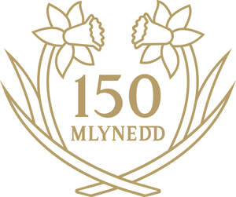

Trade Mark Journal No.2026/012 20 March 2026
UK00004334554 3 February 2026 (9,10,14,16,18,20,21,24,25,26,27,28,32,33,41)

- Class 9
- Downloadable publications; downloadable educational and training materials; mobile application software relating to sport; podcasts; downloadable videos; digital music downloads; mouse mats; mobile phone accessories.
- Class 10
- Spectacles; sunglasses.
- Class 14
- Jewellery; lapel pins; tiepins; cufflinks; medals; trophies; clocks; watches.
- Class 16
- Printed matter; photographs; stationery; pens; pencils; printed publications; books; match programs; stickers; notepads; notebooks.
- Class 18
- Bags; luggage; trunks and travelling bags; handbags, rucksacks, purses; umbrellas; walking sticks; clothing for animals.
- Class 20
- Furniture; mirrors; picture frames; pillows; cushions.
- Class 21
- Mugs; cups, glassware; tumblers; plates; dishes; bowls, household or kitchen utensils and containers; ornaments made of ceramics, glass, porcelain or earthenware; jugs; vases; tea cosies; teapots; tea caddies.
- Class 24
- Textiles and textile goods; bed and table covers; covers for pillows, cushions or duvets.
- Class 25
- Clothing, footwear, headgear; scarves.
- Class 26
- Badges for wear; button badges; embroidered badges.
- Class 27
- Carpets; rugs; mats; wall hangings (non-textile); wallpaper.
- Class 28
- Toys; games and playthings; plush toys; playing cards; gymnastic and sporting articles; decorations for Christmas trees.
- Class 32
- Beers; mineral and aerated waters; non-alcoholic drinks; fruit drinks and fruit juices; syrups for making beverages; shandy, de-alcoholised drinks, non-alcoholic beers and wines.
- Class 33
- Alcoholic wines; spirits and liqueurs; alcopops; alcoholic cocktails.
- Class 41
- Education; providing of training; entertainment; sporting and cultural activities; educational services relating to sport; training services; sports coaching; coaching; arranging and organisation of competitions and sporting events; provision of courses of sports coaching, player development and welfare; physical fitness training; organising of sports competitions and leagues; officiating at sports contests; sports club services; provision of facilities for sports events; accreditation of professional competency in the field of sports coaching; provision of information relating to all of the aforesaid.
Football Association of Wales Limited
Representative: Indelible IP Limited